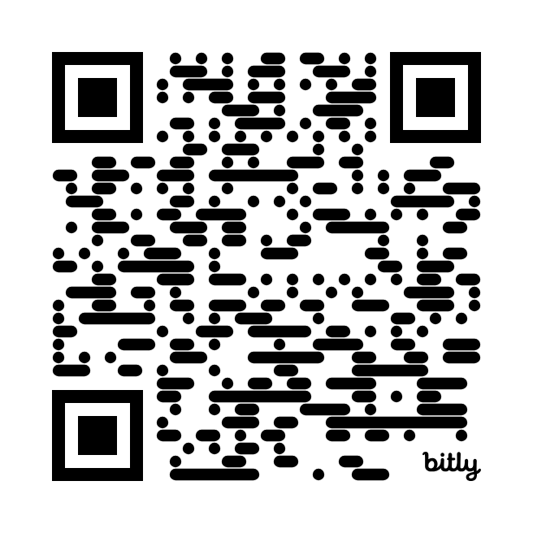

Recognize
When polished output conceals diminished learning.
Curriculum, enclosure, and the refusal of frictionless learning
What if the most consequential curriculum decision in the age of generative AI is deciding which difficulties must not disappear?
Micah J. Miner · National Louis University · micahminer.com

Scan or type to explore bit.ly/4om7H3mWhen polished output conceals diminished learning.
Ong, learning science, and the curricular stakes of friction.
Access, exclusion, curriculum studies, and uneven enclosure.
Subversive practices, research, and institutional redesign.
Rhetorical saturation: fluent prose performs conviction the learner may never have formed.
Noetic displacement: structure and conclusions arrive without the interpretive labor that makes them usable later.
Unproductive success: formal criteria are met while the ability to explain, defend, or extend remains weak.
This is not primarily a problem of academic integrity. It is a problem of learning and of curriculum.
Choose once. This tally stays only in your browser.
When institutions do not deliberate about the conditions of learning, vendor defaults become de facto curriculum policy.
The invisible substitution of generated completion for study.
The narrowing of expression toward statistically available fluency.
The relocation of curricular decisions into platforms and systems.
National reports show rapid growth within a short policy window.
Institutional scaffolding has not kept pace with tool availability.
Silence leaves teachers and learners to navigate defaults alone.
Teachers are not only worried about honesty. They are worried about student cognition.
The same tool, in the same classroom, can expand access and bypass learning.
Difficulty that builds capacity the learner would otherwise not construct.
Difficulty that restricts access, participation, or demonstration without educational benefit.
For whom does this difficulty build capacity, and for whom does it restrict access?
How would you classify the AI-supported translation?
The translation may enable participation and make disciplinary thinking visible. Ask what capacity the learner is now able to demonstrate.
If target-language composition is itself the learning goal, translation may bypass productive language-building struggle. Ask what the assignment is for.
This is the framework’s intended answer: preserve the relevant learning work while reducing barriers unrelated to the curricular purpose.
Chat: What one additional fact would you need before deciding?
If education concerns how subjects understand their experience across past, present, and future, then existential friction protects the learner’s presence in the act of study.
Pathway: Pinar and the autobiographical study of educational experience.
Technical language asks whether AI makes learning efficient. Political, ethical, and aesthetic languages ask who gains, who is shaped, what is valued, and what kind of world is being made.
Pathway: Huebner’s critique of technical rationality.
A platform that makes completion effortless teaches that knowledge is instantly available, language is interchangeable, and polished performance is equivalent to understanding.
Pathway: Apple and the politics embedded in ordinary educational arrangements.
Speed · ease · access · polished completion
Knowledge is instant · language is interchangeable · performance equals understanding
Friction-preserving practices can refuse enclosure by keeping study dialogic, relational, unfinished, and answerable to communities rather than platform metrics.
Pathway: Moten and Harney; Givens; the conference theme of subversion.
Subversion is not the refusal of technology. It is the refusal to let efficiency become the unquestioned purpose of education.
Make room for deliberation before adoption becomes destiny.
Require learners and institutions to account for process and judgment.
Return curricular decisions from platforms to educators, learners, and communities.
The device gap has narrowed in many contexts.
Students do not receive equal support for judging and using AI.
Some communities receive tools without the institutional capacity to govern them.
The tools arrived everywhere. The deliberative scaffolding did not.
How do K–12 educators understand and navigate friction-reducing affordances?
What conditions enable or constrain friction-preserving pedagogy?
How can educator and institutional sense-making inform AI governance, assessment, and design?
A qualitative-dominant mixed methods case study will test, complicate, revise, or reject parts of the framework.
I direct technology and AI policy across five K–12 schools. I encounter the promise, constraints, privacy risks, budgets, and classroom consequences from inside the system.
I am predisposed to hear cognitive bypass more readily than cognitive extension. Negative case analysis, member checking, reflexive memoing, and evidence divergence make that disposition visible.
Technoskepticism is not opposition to technology. It is an insistence that technological change remain answerable to human purposes.
Names what disappears when cognition, rhetoric, ownership, and institutional deliberation are bypassed.
Explains why some forms of difficulty deserve protection while others require removal or redesign.
Connects everyday classroom practices to institutional design and resistance to enclosure.
If curriculum is the conversation a generation has with itself about what is worth knowing, friction keeps that conversation from being auto-completed.
Where does pedagogical friction still risk psychologizing curriculum?
How can educators preserve productive struggle without preserving exclusion?
What collective acts can interrupt algorithmic enclosure beyond the classroom?
The world is not silent, and neither is the classroom.